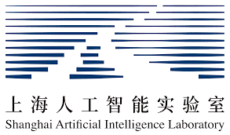
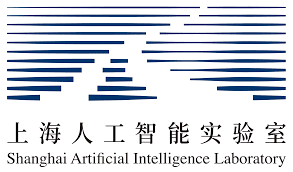
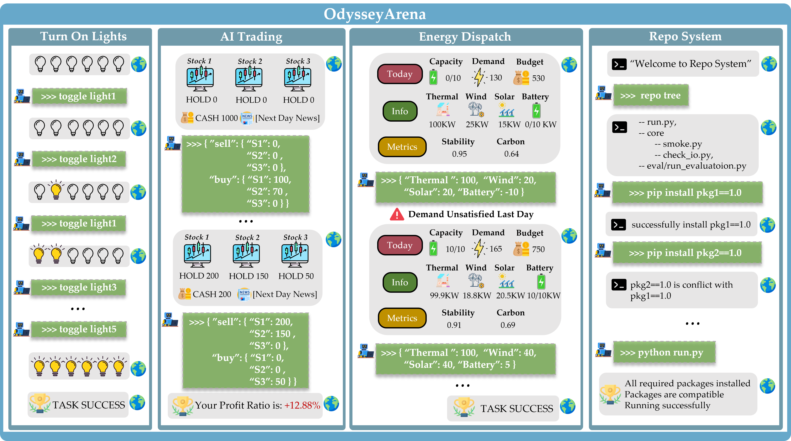

Fangzhi Xu*
Hang Yan*
Qiushi Sun*
Jinyang Wu
Zixian Huang
Muye Huang
Jingyang Gong
Zichen Ding
Kanzhi Cheng
Yian Wang
Xinyu Che
Zeyi Sun
Jian Zhang
Zhangyue Yin
Haoran Luo
Xuanjing Huang
Ben Kao
Jun Liu
Qika Lin
 

The rapid advancement of Large Language Models (LLMs) has catalyzed the development of
autonomous agents capable of navigating complex environments. However, existing evaluations primarily adopt a
deductive paradigm,
where agents execute tasks based on explicitly
provided rules and static goals, often within
limited planning horizons. Crucially, this neglects the inductive necessity for agents to discover latent
transition laws from experience autonomously, which is the cornerstone for enabling agentic foresight and
sustaining strategic coherence. To bridge this gap, we introduce
ODYSSEYARENA, which re-centers agent evaluation on long-horizon, active, and inductive interactions. We formalize
and instantiate four primitives, translating abstract transition dynamics into concrete interactive environments.
Building upon this, we establish ODYSSEYARENA-LITE for standardized benchmarking, providing a set of 120 tasks to
measure an agent's inductive efficiency and long-horizon discovery. Pushing further, we introduce
ODYSSEYARENA-CHALLENGE to stress-test agent stability across extreme interaction horizons (e.g., > 200 steps).
Extensive experiments on 15+ leading LLMs reveal that even frontier models exhibit a deficiency in inductive
scenarios, identifying a critical bottleneck in the pursuit of autonomous discovery in complex environments.
We provide a interaction demo interface, Please feel free to try our environment.
Environment Demonstration
We demonstrate four calibrated environments: Turn On Lights (Discrete Symbolic Rules), AI Trading (Continuous Stochastic Dynamics) , Energy Dispatch (Continuous Dynamic Systems) , and Repo System (Relational Graph Structures).
Leaderboard of OdysseyArena-Lite
Performance comparison on four environments. We provide three different reasoning effort of gpt-oss-120b. For AI Trading environment, we report the profit rate and pass@4 is calculated based on the highest profit of each task. For other three environments, we report the success rate. Colored Rows represent proprietary models. The best results are in bold.
Conclusion
ODYSSEYARENA introduces a paradigm shift in agentic evalua- tion by transitioning from deductive instruction-following to long-horizon, inductive modeling. We formalize abstract environment dynamics into four structural primitives and instantiate them via ODYSSEYARENA, and then establish a standardized framework for the reproducible evaluation of an agent’s ability to discover latent transition laws. The observed low-performance plateau across multiple flagships reveals a fundamental inductive bottleneck that scaling alone cannot resolve, underscoring the necessity of moving be- yond deductive compliance. Future research toward more agentic intelligence should prioritize architectures capa- ble of distilling latent transition laws from raw experience, thereby bridging the gap between passive rule-following and active discovery in complex, dynamic worlds.
@misc{xu2026odysseyarenabenchmarkinglargelanguage, title={OdysseyArena: Benchmarking Large Language Models For Long-Horizon, Active and Inductive Interactions}, author={Fangzhi Xu and Hang Yan and Qiushi Sun and Jinyang Wu and Zixian Huang and Muye Huang and Jingyang Gong and Zichen Ding and Kanzhi Cheng and Yian Wang and Xinyu Che and Zeyi Sun and Jian Zhang and Zhangyue Yin and Haoran Luo and Xuanjing Huang and Ben Kao and Jun Liu and Qika Lin}, year={2026}, eprint={2602.05843}, archivePrefix={arXiv}, primaryClass={cs.CL}, url={https://arxiv.org/abs/2602.05843}, }